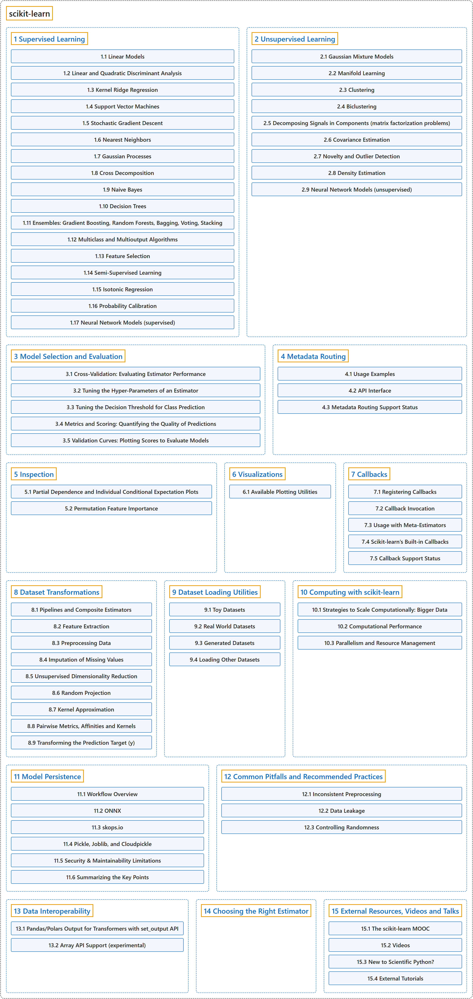

scikit-learn
Classification

Glossary
| Term | Definition | 中文翻译 | Source |
|---|---|---|---|
| scikit-learn scikit-learn |
"Scikit-learn is an open source machine learning library that supports supervised and unsupervised learning." |
Scikit-learn 是一个支持监督学习和无监督学习的开源机器学习库。 |
scikit-learn developers, n.d.-b, "Getting Started", para. 1 |
| 1 Supervised Learning 监督学习 |
"Learning where the expected prediction (label or ground truth) is available for each sample when fitting the model, provided as y." | 在拟合模型时，每个样本的预期预测（标签或真实值）都可得到的学习，以 y 的形式提供。 | scikit-learn developers, n.d.-a, "supervised learning" |
| 2 Unsupervised Learning 无监督学习 |
"Learning where the expected prediction (label or ground truth) is not available for each sample when fitting the model, as in clusterers and outlier detectors." | 在拟合模型时，每个样本的预期预测（标签或真实值）都不可得到的学习，如聚类器和离群点检测器。 | scikit-learn developers, n.d.-a, "unsupervised learning" |
| 3 Model Selection and Evaluation 模型选择与评估 |
(context) "Fitting a model to some data does not entail that it will predict well on unseen data. This needs to be directly evaluated." | （语境）用一些数据拟合了模型，并不意味着它在未见过的数据上也能预测得好。这需要直接加以评估。 | scikit-learn developers, n.d.-b, "Model evaluation", para. 1 |
| 4 Metadata Routing 元数据路由 |
"This guide demonstrates how metadata can be routed and passed between objects in scikit-learn." | 本指南演示在 scikit-learn 中元数据如何在对象之间路由和传递。 | scikit-learn developers, n.d.-c, "4. Metadata Routing", para. 1 after the Note |
| 5 Inspection 检查 |
"The sklearn.inspection module provides tools to help understand the predictions from a model and what affects them." | sklearn.inspection 模块提供工具，帮助理解模型的预测以及影响预测的因素。 | scikit-learn developers, n.d.-c, "5. Inspection", para. 1 |
| 6 Visualizations 可视化 |
"Scikit-learn defines a simple API for creating visualizations for machine learning." | Scikit-learn 定义了一个用于创建机器学习可视化的简单 API。 | scikit-learn developers, n.d.-c, "6. Visualizations", para. 1 |
| 7 Callbacks 回调 |
"An object which can be registered on a compatible estimator to have its hooks called during the fitting of that estimator." | 一个可以注册到兼容估计器上的对象，在该估计器拟合期间调用它的钩子。 | scikit-learn developers, n.d.-a, "callbacks" |
| 8 Dataset Transformations 数据集变换 |
"scikit-learn provides a library of transformers, which may clean (see Preprocessing data), reduce (see Unsupervised dimensionality reduction), expand (see Kernel Approximation) or generate (see Feature extraction) feature representations." | scikit-learn 提供一个变换器库，可以清洗（见 Preprocessing data）、约简（见 Unsupervised dimensionality reduction）、扩展（见 Kernel Approximation）或生成（见 Feature extraction）特征表示。 | scikit-learn developers, n.d.-c, "8. Dataset transformations", para. 1 |
| 9 Dataset Loading Utilities 数据集加载工具 |
"The sklearn.datasets package embeds some small toy datasets and provides helpers to fetch larger datasets commonly used by the machine learning community to benchmark algorithms on data that comes from the ‘real world’." |
sklearn.datasets 包内置了一些小型玩具数据集，并提供辅助工具来获取更大的数据集，这些数据集常被机器学习社区用来在来自“真实世界”的数据上对算法做基准测试。 |
scikit-learn developers, n.d.-c, "9. Dataset loading utilities", para. 1 |
| 10 Computing with scikit-learn 用 scikit-learn 计算 |
(context) "For some applications the amount of examples, features (or both) and/or the speed at which they need to be processed are challenging for traditional approaches. In these cases scikit-learn has a number of options you can consider to make your system scale." | （语境）对某些应用来说，样本、特征（或两者）的数量，以及/或者处理它们所需的速度，对传统方法是一种挑战。这时 scikit-learn 有一些选项可供考虑，让你的系统扩展。 | scikit-learn developers, n.d.-c, "10.1. Strategies to scale computationally: bigger data", para. 1 |
| 11 Model Persistence 模型持久化 |
"After training a scikit-learn model, it is desirable to have a way to persist the model for future use without having to retrain." | 训练好一个 scikit-learn 模型后，最好有一种方法把模型持久保存下来，供以后使用而无需重新训练。 | scikit-learn developers, n.d.-c, "11. Model persistence", para. 1 |
| 12 Common Pitfalls and Recommended Practices 常见陷阱与推荐做法 |
"The purpose of this chapter is to illustrate some common pitfalls and anti-patterns that occur when using scikit-learn." | 本章的目的是说明使用 scikit-learn 时出现的一些常见陷阱和反模式。 | scikit-learn developers, n.d.-c, "12. Common pitfalls and recommended practices", para. 1 |
| 13 Data Interoperability 数据互操作性 |
"Scikit-learn handles four kinds of data for X as used in fit(X, y), fit(X), fit_transform(X) and transform(X) as well as Xt as returned by transform(X) and fit_transform(X):" |
Scikit-learn 为 X 处理四种数据，X 即 fit(X, y)、fit(X)、fit_transform(X) 和 transform(X) 中所用的 X，以及 transform(X) 和 fit_transform(X) 返回的 Xt： |
scikit-learn developers, n.d.-c, "13. Data Interoperability", para. 1 |
| 14 Choosing the Right Estimator 选择合适的估计器 |
"Often the hardest part of solving a machine learning problem can be finding the right estimator for the job." | 解决机器学习问题时，最难的部分往往是为任务找到合适的估计器。 | scikit-learn developers, n.d.-c, "14. Choosing the right estimator", para. 1 |
| 15 External Resources, Videos and Talks 外部资源、视频与讲座 |
(context) "If you are new to scikit-learn, or looking to strengthen your understanding, we highly recommend the scikit-learn MOOC (Massive Open Online Course)." | （语境）如果你刚接触 scikit-learn，或想加深理解，我们强烈推荐 scikit-learn MOOC（大型开放在线课程）。 | scikit-learn developers, n.d.-c, "15.1. The scikit-learn MOOC", para. 1 |
References
scikit-learn developers. (n.d.-a). Glossary of common terms and API elements (Version 1.9.1). Retrieved October 30, 2026, from https://scikit-learn.org/stable/glossary.html
scikit-learn developers. (n.d.-b). Getting started (Version 1.9.1). Retrieved October 30, 2026, from https://scikit-learn.org/stable/getting_started.html
scikit-learn developers. (n.d.-c). scikit-learn User Guide (Version 1.9.1). Retrieved October 30, 2026, from https://scikit-learn.org/stable/user_guide.html